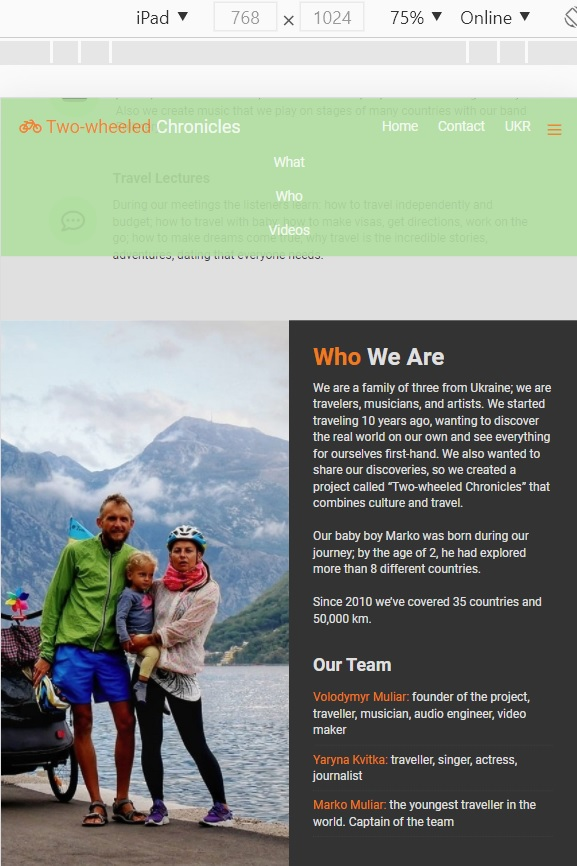
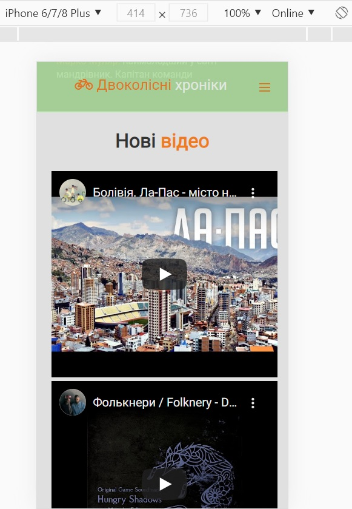
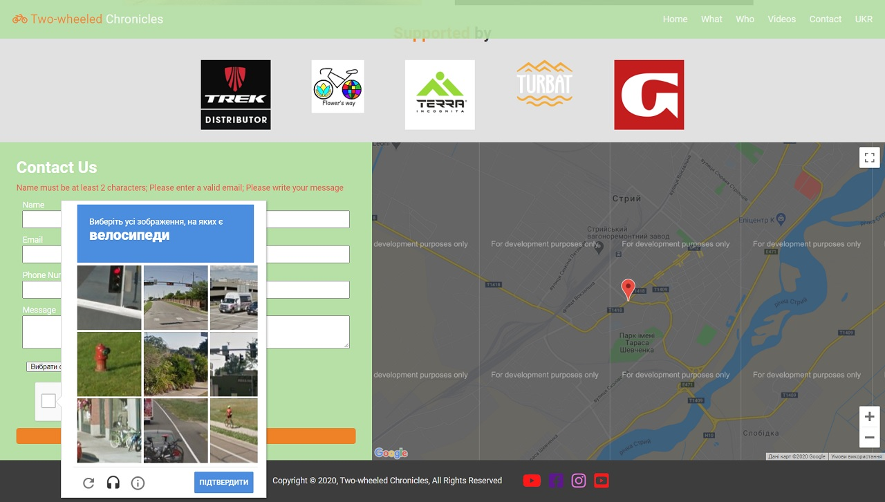

Two-wheeled Chronicles Website
This is a single page website I've made for Ukrainian travellers and musicians Two-wheeled Chronicles.
Features of website:
- - Built using CSS Flexbox
- - Responsive web design
- - Bilingual (English & Ukrainian)
Live Link ➡
Technologies:
- - CSS Flexbox
- - Rss2Json API
- - jQuery
- - Regex
- - Google Maps API
- - Netlify
View on iPad

View on iPhone 6/7/8 Plus (Ukrainian version)
Dynamically embedded latest video

Contact form with validation and recaptcha. Google map

Acknowledgments:
- - Tips used from: Traversy Media from Udemy; FollowAndrew, The Net Ninja, Web Dev Simplified - from YouTube; Stack Overflow; CSS-Tricks; Codegena; The Geek Goddess; Google Cloud Docs; WebStoked
- - Images from Two-wheeled Chronicles Facebook Page
- - Icons from fontawesome.com